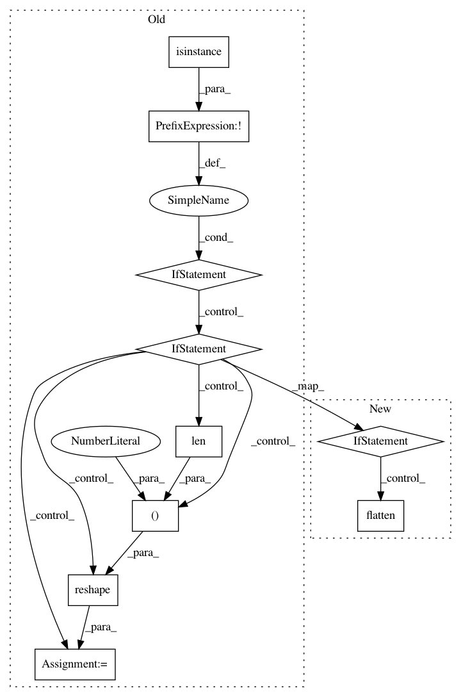

33a33b24185e45478c4758ac14cab8ae5234c44b,pgmpy/inference/base_continuous.py,AbstractGaussian,__init__,#AbstractGaussian#,24
Before Change
def __init__(self, mean_vec, cov_matrix):
if not isinstance(mean_vec, np.matrix):
if isinstance(mean_vec, (np.ndarray, list, tuple, set, frozenset)):
length = len(mean_vec)
mean_vec = np.matrix(mean_vec)
mean_vec = np.reshape(mean_vec, (1, length))
else:
raise TypeError("mean_vec should be a 1d array type object")
mean_vec = np.reshape(mean_vec, (len(mean_vec), 1))
if not isinstance(cov_matrix, np.matrix):
raise TypeError(
"cov_matrix must be numpy.matrix type object")
After Change
def __init__(self, mean_vec, cov_matrix):
if isinstance(mean_vec, (np.matrix, np.ndarray, list, tuple, set, frozenset)):
mean_vec = np.array(mean_vec).flatten()
else:
raise TypeError("mean_vec should be a 1d array type object")
mean_vec = np.matrix(np.reshape(mean_vec, (len(mean_vec), 1)))
if not isinstance(cov_matrix, np.matrix):
raise TypeError(
In pattern: SUPERPATTERN
Frequency: 3
Non-data size: 10
Instances
Project Name: pgmpy/pgmpy
Commit Name: 33a33b24185e45478c4758ac14cab8ae5234c44b
Time: 2016-06-17
Author: utkarsh.gupta550@gmail.com
File Name: pgmpy/inference/base_continuous.py
Class Name: AbstractGaussian
Method Name: __init__
Project Name: pgmpy/pgmpy
Commit Name: 33a33b24185e45478c4758ac14cab8ae5234c44b
Time: 2016-06-17
Author: utkarsh.gupta550@gmail.com
File Name: pgmpy/inference/base_continuous.py
Class Name: GradientLogPDF
Method Name: __init__
Project Name: pgmpy/pgmpy
Commit Name: 33a33b24185e45478c4758ac14cab8ae5234c44b
Time: 2016-06-17
Author: utkarsh.gupta550@gmail.com
File Name: pgmpy/inference/base_continuous.py
Class Name: AbstractGaussian
Method Name: get_val